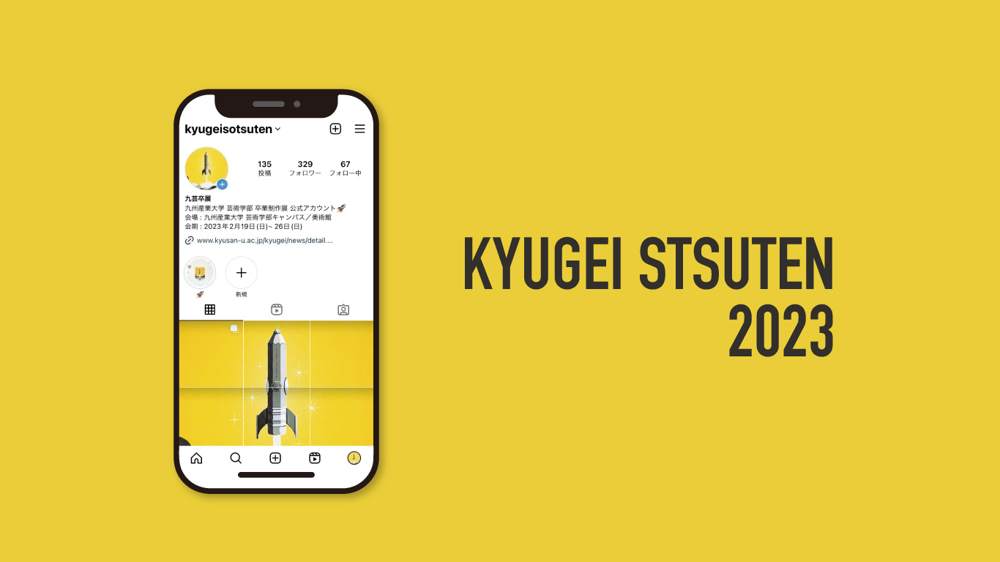

KYUGEI SOTSUTEN 2023｜九州産業大学卒業制作展
KYUGEI SOTSUTEN 2023のInstagram運営
Public Relations
Information Design
Instagram
九州産業大学芸術学部卒業制作・芸術研究科修了制作展2023のインスタグラム運営を担当しました。
委員会会議でSNS運用を提案し、九芸卒展のインスタグラムの開設に至りました。写真学科の学生と私の二人で運用を行い、制作展までのカウントダウンや、制作展準備の様子などを主に投稿しました。
また、九芸卒展のビジュアルやCM制作を行った学生にインタビューを行ったり、会期中には自身の作品と学生のお写真を撮影して投稿しました。
現在、インスタグラムアカウントは次の世代に引き継がれており、九芸卒展の広報を行っています。
学科サイト： KYUGEI SOTSUTEN
使用ソフト：Illustrator,Photoshop,PremierePro